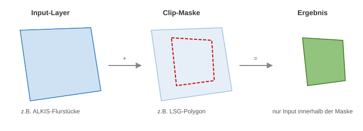
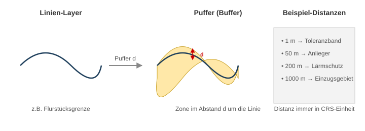
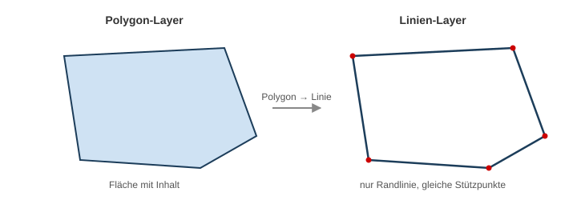
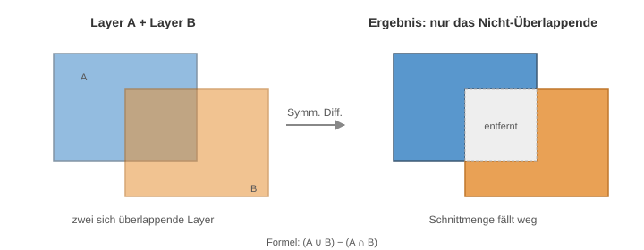

Analyse-Grundlagen
Worum geht es?
Geoverarbeitung (engl. Geoprocessing) bedeutet: aus bestehenden Geodaten neue Geodaten berechnen. Das Ergebnis ist immer ein neuer Layer – die Eingangsdaten bleiben unverändert.
In dieser Sitzung lernen Sie vier zentrale Werkzeuge kennen. Jedes davon hat genau eine Aufgabe, und richtig kombiniert lösen sie auch komplexe Fragestellungen.
| Werkzeug | Antwortet auf die Frage |
|---|---|
| Clip (Zuschneiden) | „Welcher Teil von A liegt innerhalb von B?" |
| Buffer (Puffer) | „Welche Zone liegt im Abstand d um meine Geometrie?" |
| Polygon → Linie | „Wie sehen nur die Ränder meiner Flächen aus?" |
| Symmetrische Differenz | „Wo unterscheiden sich A und B voneinander?" |
1. Clip – Zuschneiden
Was passiert? Ein Layer wird auf die Form eines anderen Layers reduziert. Alles außerhalb wird entfernt.

| Eingabe | Bedeutung |
|---|---|
| Input-Layer | der Layer, der zugeschnitten wird (z.B. ALKIS-Flurstücke) |
| Clip-Layer | die "Schablone", auf die zugeschnitten wird (z.B. LSG-Polygon) |
| Ergebnis | nur die Teile des Input-Layers, die innerhalb der Schablone liegen |
Typische Anwendung
Sie haben einen großen Datensatz (z.B. ALKIS für den ganzen Landkreis) und brauchen nur den Ausschnitt für ein Projektgebiet. Clip macht aus 30.000 Flurstücken vielleicht 80 – das spart Rechenzeit und Übersicht.
In QGIS finden Sie das Werkzeug unter: Vektor → Geoverarbeitungswerkzeuge → Zuschneiden
2. Buffer – Puffer
Was passiert? Um jede Geometrie wird eine Zone in einem festgelegten Abstand d gelegt. Das Ergebnis ist immer ein Polygon.

| Eingabe | Bedeutung |
|---|---|
| Input-Layer | Punkte, Linien oder Polygone |
| Abstand | in der Einheit des Koordinatensystems (bei EPSG:25832 in Metern) |
| Auflösung | Anzahl Stützpunkte pro Viertelkreis (Standard 5 reicht) |
| Auflösen | ob sich überlappende Puffer zu einem Polygon verschmolzen werden |
Achtung: Einheit prüfen
In einem geografischen Koordinatensystem (EPSG:4326) sind die Einheiten Grad, nicht Meter. Ein Puffer mit "50" wäre dann 50 Grad ≈ 5500 km. Immer vorher auf EPSG:25832 (oder ein anderes metrisches CRS) projizieren.
Typische Distanzen aus der Verwaltungspraxis:
- 1 m – Toleranzband, um Digitalisierungsungenauigkeiten auszublenden
- 50 m – Anliegerbenachrichtigung bei Baumaßnahmen
- 200 m – Lärmschutzbereich
- 1000 m – Einzugsbereich z.B. für Standortanalysen
In QGIS: Vektor → Geoverarbeitungswerkzeuge → Puffer
3. Polygon → Linie
Was passiert? Aus einem Flächen-Layer wird ein Linien-Layer – nur die Ränder bleiben übrig.

Warum macht man das?
- Linien lassen sich anders puffern als Flächen (z.B. nur „um die Grenze herum", nicht „in die Fläche hinein")
- Linien-Layer brauchen für Analysen weniger Rechenleistung
- Sym. Differenz und andere Vergleiche zwischen "nur Rändern" sind oft sinnvoller als zwischen ganzen Flächen
In QGIS: Vektor → Geometrie-Werkzeuge → Polygone zu Linien
Praxis-Hinweis
Bei Multipolygonen (z.B. einem Schutzgebiet aus mehreren Teilflächen) entstehen automatisch mehrere Linien-Features. Die Topologie (also welche Linie zu welcher Fläche gehörte) wird über die Attribute mitgegeben.
4. Symmetrische Differenz
Was passiert? Aus zwei Layern A und B werden nur die Teile zurückgegeben, die in genau einem der beiden Layer vorkommen – die Überlappung fällt weg.

Mengentheoretische Definition: Symm. Differenz = (A ∪ B) − (A ∩ B)
| Vergleich | Was passiert |
|---|---|
| Schnitt (Intersect) | nur das Gemeinsame |
| Vereinigung (Union) | alles aus A und B |
| Differenz (Difference) | nur A, ohne das, was in B liegt |
| Symmetrische Differenz | nur das, was unterschiedlich ist |
Wann ist das nützlich?
Wenn Sie zwei Versionen desselben Layers vergleichen wollen – z.B. „alte Schutzgebietsgrenze" gegen „neue Schutzgebietsgrenze" – zeigt die symm. Differenz genau die Änderungen. Alles, was gleich geblieben ist, verschwindet.
In QGIS: Vektor → Geoverarbeitungswerkzeuge → Symmetrische Differenz
Kombination: die Stärke liegt in der Kette
Einzelne Werkzeuge sind selten die Lösung – die echte Stärke entsteht durch Verkettung. Ein Beispiel, das wir im nächsten Block durchgehen:
flowchart LR
A[LSG-Polygon] --> A1[Polygon → Linie]
B[ALKIS WFS] --> B1[Clip auf LSG-Umkreis]
B1 --> B2[Polygon → Linie]
B2 --> B3[Buffer 1 m]
A1 --> C[Symmetrische Differenz]
B3 --> C
C --> R[Abweichungen sichtbar]
style R fill:#e0f0d8,stroke:#38761dJeder Schritt für sich ist trivial. Zusammen beantworten sie die Frage: „An welchen Stellen weicht die LSG-Grenze von den Flurstücksgrenzen ab?"
Genau das schauen wir uns als nächstes praktisch an: LSG vs. ALKIS – Praxis.